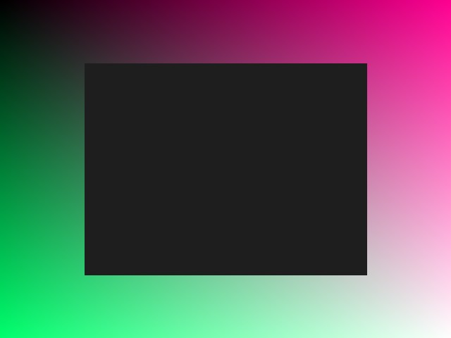

Lokale Test-Version
- Läuft komplett im Browser ohne ESP32-Hardware
ESP32-CAM Ambilight Test - v2.0

Klick-Koordinaten:
Horizontale Segmente:
Vertikale Segmente:
Fenster-Tiefe (Pixel):
Punkte zurücksetzen
Ambilight berechnen (Lokal)